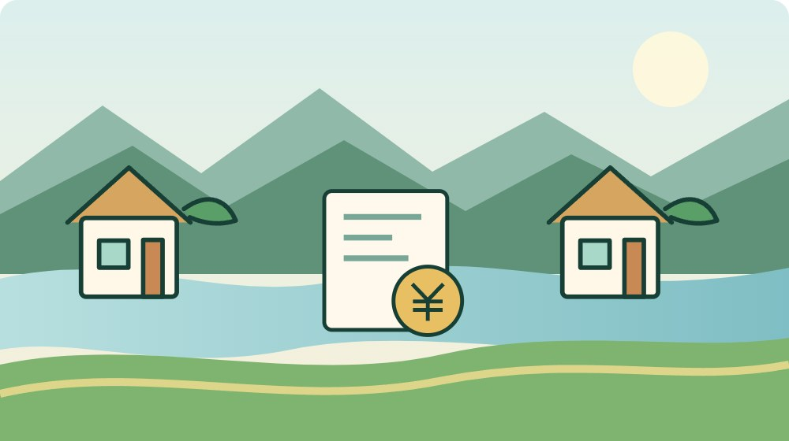

移住・暮らし・データ
森町の二拠点生活費｜201件の調査から考える

この記事の要点
Q. 今の家を残して森町にも拠点を持つと、生活費はどれくらい増える？
A. 森町の2026年3月の報告書は、都市部マンション調査201件から経済的負担と仕事との両立を主要論点に挙げています。ただし二拠点生活費の相場額は掲載されていません。今の住まいに加え、森町の家の固定費、移動費、修繕・不在時管理費を分けて見積もります。今日は滞在しない月にも払う支出を一つ書き、年額なら12で割って月の負担を確認してください。
二軒目の家を、地域の管理負担から考える
森町の家や庭、集落の環境は、そこに住む人や所有者が手をかけて保ってきたものです。二拠点生活で訪れる側が不在の間も、草木は伸び、建物の確認や連絡が必要になります。地域の人が続けている管理を、ただで使える暮らしの背景にしてはいけないと私は考えます。
大石浩之（磐田市／不動産業）です。今の住まいを残しながら森町にも拠点を持つという選択には、完全移住を急がずに暮らしを試せる余地があります。ただ、二軒分の維持費と移動が家計に残ります。買う時の金額だけでなく、使わない月に何を払うかを先に見たいところです。
確認日は2026年9月13日です。今回は森町公式サイトに掲載された、森町二地域居住推進コンソーシアムの2026年3月の『事業実施概要』を読みました。都市部マンションへの調査で201件の回答を得たと記されていますが、この数字から生活費の平均額を算出することはできません。
森町の二地域居住という考え方を先に整理したい方は、移住か現状維持かの二択をやめる記事も参考になります。本稿は二軒目を持つ是非そのものを決めず、家計の継続負担を確かめる手順に絞ります。
事実整理：201件と35件は別の調査
森町の報告書4ページは、都市部のマンションコミュニティを対象にオンラインアンケートを実施し、201件の回答を得たとしています。調べた内容は移住・二地域居住への関心、障壁、森町の魅力、居住地に求める条件、子育て世代の意向などです。実際に二軒を維持した家計簿の集計とは記されていません。
同じページには、遠州森町PAで利用者に対面アンケートを行い、35件の回答を得たことも記載されています。こちらは森町の認知、魅力、立ち寄り、お試し住宅への関心などを確認する調査です。都市部の調査とは対象も方法も異なり、同じ質問への236件の回答としてまとめて扱いません。
都市部調査の主要論点として、報告書は経済的負担、仕事との両立、戸建てへの希望、暮らしの質を挙げています。私は、暮らしへの関心と同時に、続ける条件が論点になっている点に注目します。ただし、報告書の整理と私の家計面での受け止めは区別して読み進めてください。
201件は、森町で二拠点生活を始めた世帯数ではありません。また、森町全世帯の意向を示す数字でもありません。調査対象が限定された回答数だと押さえることで、『201世帯が実践できたなら自分も同じ費用でできる』という読み違いを防げます。

費用相場は掲載されていない。だから請求書から始める
森町の今回の報告書には、二拠点生活の月額相場や、世帯別の生活費実績は掲載されていません。家賃、修繕、交通費を含めた平均額を、この資料だけで答えることはできません。201という数字は回答の規模を表すもので、支出額を割り戻すための分母には使えない数字です。
私は、金額がないことを無理に埋めるより、家族が確認できる請求書と契約条件に戻る方がよいと考えます。今の住まいの固定費は実績を使い、森町の候補物件は見積りや契約前の確認を使います。実額、見積額、まだ分からない額を別の欄に置くことが出発点です。
費用を比べる期間は、私はまず1年間にそろえることを勧めます。毎月の家賃と年払いの保険、季節ごとの管理を別々の単位のまま足すと、負担を見誤ります。年額が分かる支出は12で割れば月当たりを確認できますが、実際の支払月に必要な現金は別に残します。
二拠点生活の継続費用は、『今の住まいを残す費用＋森町の拠点を維持する費用＋往復の移動費＋不在時の管理・修繕費』という形で整理できます。これは本稿の家計整理用の式です。公式の算定式でも相場でもなく、各家庭の数字を入れるための分け方です。
| 区分 | 確認する根拠 | 不在月の確認 |
|---|---|---|
| 今の住まい | 契約書・請求明細 | 何の支払いが残るか |
| 森町の家 | 見積り・契約条件 | 利用日数で変わるか |
| 移動 | 予定回数と経路 | 管理だけの往復はあるか |
| 管理・修繕 | 担当と作業見積り | 行けない時に誰が対応するか |
今の住まいで減る支出と、残る支出を分ける
二拠点生活の家計では、今の住まいの費用を最初に確認します。森町にいる日が増えても、現在の契約で支払う家賃や住まいの固定費が、その日数に応じて減るとは限りません。現在の住まいを残すという前提なら、何の支払いが続くかを契約書や請求明細で確かめます。
電気や水道などは、使用量に応じる部分と、契約を維持している間にかかる部分を分けて見ます。具体的な料金体系は契約先によって異なるため、ここでは一定額と決めません。使用が減った月の明細があれば、暮らしていない日の増加で何が減ったのかを自分の実績から確認できます。
家族の一部が都市側に残る場合は、食費や交通費も世帯全体として単純には減りません。二つの場所で同じものを買い置きする支出も考えます。これはすべての家庭に発生する固定費ではなく、家族が分かれて過ごす計画なら確かめたい項目です。
私は、節約できそうな額を先に引いて予算を作るのは避けたいと考えます。契約を変えるなど、減額の根拠が確認できたものだけを減らします。『森町は暮らしやすそうだから都市側の支出も自然に減る』という期待は、見積り欄へ混ぜない方が家計を守れます。
森町の家は、取得費と維持費を分けて見る
森町の拠点にかかる支出は、最初に必要なものと、使い続ける間に必要なものに分けます。借りる場合は契約時の支払いと月々の支払い、購入を考える場合は取得時の費用と所有を続ける費用を確認します。物件の表示価格だけで、二軒目の予算を閉じないようにします。
修繕の見積りには、入居前に必要な工事と、利用を始めてから判断する工事を分けてもらいます。雨漏りや設備の状態などは個別の調査が必要です。この記事は一軒ごとの状態を確認していないため、空き家なら修繕が安く済むとも、一定額の予備費で足りるとも断言できません。
森町の空き家・空き地バンクは、町が物件情報を提供する仕組みです。公式案内では町は交渉や契約を行わず、宅建業者に仲介を依頼する場合には仲介手数料が発生するとされています。バンク掲載物件だから、家探しや契約に伴う支出までゼロになるとは扱えません。
保険、税、設備点検、庭や敷地の管理なども、所有・賃貸と実際の契約条件に応じて確認します。誰が払うか曖昧な費用は、安い方へ推測せず未確認として残します。個別の課税や保険適用、契約責任は専門窓口に確認し、家族の予算表だけで結論を出さないようにします。
良い点：町の資料が経済負担と仕事を論点にしている
森町の『二地域居住の促進』は2026年3月31日更新で、今の仕事や生活を維持しながら地域にも関わる暮らしを紹介しています。報告書でも経済的負担と仕事との両立が論点として整理されています。私は、景色や体験の魅力だけでなく、続ける条件を資料に出している点を評価します。
町、地域の関係者、大学、民間企業などが調査や対話を重ねたことは、報告書から確認できます。地域を受入先として使うだけではなく、既存の暮らしとの関係を探る作業には時間がかかります。そうした準備を尊重しつつ、家庭側も生活の条件を具体的に伝える必要があると考えます。
報告書の最終ページは、短期滞在や体験参加など、段階的な関係づくりが有効だという方向を示しています。私は、家を持つ前に自分たちの移動と滞在を試す余地がある点を良いと受け止めます。ただし、報告書の方向性が、現在予約できる体験施設や支援額の一覧を意味するわけではありません。
家族が森町に求める条件は、森町暮らしの三つの条件を扱う記事でも整理できます。予算だけで候補を選ばず、仕事、移動、地域との関わりが同じ生活の中で成り立つかを考える材料にしてください。

注文したい点：滞在しない月の管理は誰が担うのか
二拠点生活で森町に滞在しない月も、家や敷地の状態を確かめる担当は必要になります。私は、候補物件を相談するとき、巡回、草木、郵便、緊急連絡を誰が担うかを先に聞きたいと考えます。家族が行けない分を、近所の人が当然に引き受ける仕組みにはしたくありません。
知人に頼む場合も、何をどこまで頼むのかを区別します。外から異常を知らせてもらうことと、鍵を預けて室内を点検してもらうことは負担も責任も異なります。管理費を払って業者に依頼する場合は、作業範囲、回数、報告方法、臨時対応の料金を見積りで確認します。
報告書に経済的負担が挙がっていても、各物件の管理費まで分かるわけではありません。私が案内に望むのは、住居費、往復交通費、不在時管理を分けて相談できることです。地域の担い手に頼りきる計画では続かない部分を、家庭側の予算へ戻して考える必要があります。
今日できる一歩は、滞在しない月の支出を一つ書くことです。借りる計画なら家賃、所有する計画なら年払いの費用、現地へ行けない計画なら巡回の見積りなど、手元で確認できる一項目から始めます。分からない額はゼロにせず、『見積りを聞く』と書けば相談が具体的になります。
往復回数と仕事の予定を同じ表に置く
森町の二拠点生活を続ける費用は、滞在日数だけでなく往復回数にも左右されます。私は、年間の滞在予定を置き、移動する回数と一回の費用を別々に書く方法を勧めます。まとまって滞在する計画と、短く何度も往復する計画では、同じ滞在日数でも家計の組み方が変わります。
車で動くなら燃料や道路料金など、自分の経路に必要な費用を確認します。鉄道などを使うなら、森町に着いてから家までの移動も含めます。ここでは東京から一律いくらと決めず、家族の出発地、人数、実際の移動方法で計算します。荷物や子どもと動く条件も予定に入れます。
仕事との両立は、通信が使えれば終わる話ではないと私は考えます。出社日、始業時刻、移動日に働ける時間、家族が別々に移動する可能性を予定表で確認します。報告書が仕事との両立を主要論点に挙げることを、家庭では一週間の予定へ置き換えて考えるわけです。
二拠点生活のために仕事を変えるかどうかは、この記事では決めません。まず今の仕事を続ける条件で試算し、実行できない月があるかを見ます。予定どおり行けない月も家を維持できるかが分かれば、二軒目を借りる時期や、先に短期滞在を試す選択を検討できます。
対案・結論：年額と支払月の二つを残す
森町の二拠点生活費を整理するなら、各支出について『年間にいくらか』『実際に何月に払うか』を残します。年額を12で割った月当たりの負担は比較に便利ですが、支払いが集中する月の準備まで済むわけではありません。私は、年間総額と手元資金の予定を分けることを勧めます。
費用表には、今の住まい、森町の住まい、移動、不在時管理、修繕という欄を用意します。支出が二つの欄に重ならないよう、たとえば修繕を維持費にも二重計上しないようにします。誰が支払う契約なのかを横に書くと、家族間の立替えも整理できます。
予備費は『念のため一律いくら』と記事の数字で決めず、候補の家の状態と、どの時点で支出が起こるかを確認して考えます。修繕見積りがまだない場合は、予算の空欄が残った状態です。空欄を認める方が、総額を小さく見せて契約を急ぐより家族の判断に役立ちます。
家族のメモは、今日は一項目だけで構いません。『森町に行かない月も払う費用は何か』に答え、金額の根拠となる請求書や見積りの場所を書きます。次の相談でその一枚を示せれば、抽象的な二拠点生活への憧れから、続ける条件の話へ移れます。
家族に残す記録：住まい方と契約条件をそろえる
二拠点生活の家族用記録には、滞在する人、年間の予定、鍵の管理、連絡役、契約名義、請求先、管理の担当を残します。二軒目の費用を一人だけが知っている状態にしないためです。個人情報を含む契約書や口座の情報は、共有する範囲を家族内でも分けて保管します。
住民票をどこに置くかの確認は、家計表とは別の課題です。二拠点生活の住民票を扱う記事も参考に、実際の生活と各手続きの条件を確認します。費用が安そうだから住所だけ都合よく扱える、と判断しないようにしてください。
借りる家では予定する利用の仕方を貸主側へ伝え、長期不在や管理の分担を契約条件に照らして確認します。所有する場合も、保険や設備などの契約先へ利用状況を正確に伝えます。二拠点という呼び名だけで、契約上の条件が自動的に変わるわけではありません。
試しの滞在を終えたら、見積りと実績の差を一度だけ振り返ります。移動、食事、買物、家の準備で、どの支出や時間が予定から動いたかを記録します。滞在の楽しさを否定する作業ではなく、次の滞在でも無理なく続けられる条件を見つけるための振り返りです。
大石の視点：201件を、わが家の一年へ戻す
森町の報告書にある201件は、関心や障壁を考える材料です。私は、その数字を一世帯の費用相場へすり替えません。暮らしを決める家族に必要なのは、今の住まいと森町の家に、年間いくらの支出が残るかです。数字は、持ち主が払う負担へ戻して初めて判断に使えます。
二軒目が安く手に入っても、二軒分の管理が軽くなるとは限りません。これが今回、私が言い切りたいことです。地域の人の親切や家族の休日を、予算表に載らない無料の資源にしない。現地へ行けない時の担当と費用を決めることが、森町との関わりを続ける土台になると考えます。
一方で、費用を細かく数えすぎると、試す前から可能性を閉じてしまうのではないかという迷いもあります。だから私は、最初から二軒目の取得だけを比較しません。短期滞在で実際の移動と支出を確かめる方法も含め、家族が次に確かめる材料を一つ増やしたいと思います。
森町への関心と、継続費用への不安は同時に持っていて構いません。2026年9月13日の今日、滞在しない月にも残る支出を一つ書くことから始めてください。制度や利用条件は更新される場合があり、個別の契約・税務・保険は担当窓口や専門家へ確認します。家計の根拠がそろうまで、決断を保留する選択も残せます。
よくある質問
201件の調査から、森町の二拠点生活の月額相場は分かりますか？
今回の報告書にある201件は、都市部マンションコミュニティへのアンケート回答数です。二拠点生活を実践した世帯の家計実績を集計した数字ではなく、生活費の月額相場も掲載されていません。今の住まい、森町の拠点、往復交通、不在時管理と修繕を、各家庭の契約や見積りで確かめる必要があります。
森町へ行かない月なら、二軒目の支出はなくなりますか？
滞在しなくても、契約や所有に伴う支出が残る場合があります。家賃、保険、設備の契約、敷地や建物の管理など、実際に継続する項目を請求書と契約条件で確認してください。使用量が減る支出と、契約を維持する支出を分け、未確認の費用はゼロとせず見積りや確認先を記録します。
費用が不安なとき、今日は何から始めればよいですか？
森町に滞在しない月にも払う支出を一つ書いてください。金額が分かれば根拠となる請求書や見積りを添え、年払いなら12で割って月当たりの負担も確認します。ただし実際の支払月は別に記録します。候補の家が未定なら、今の住まいを残す費用から始めても、二軒分の家計を考える材料になります。
参考にした公式情報
- 森町二地域居住推進コンソーシアム『事業実施概要』2026年3月・4ページ（2026年9月13日確認）
- 森町『二地域居住の促進』（2026年9月13日確認）
- 森町『森町空き家・空き地バンク』（2026年9月13日確認）

大石浩之（磐田市／不動産業・宅地建物取引士）。森町の空き家・土地と家族の段取りを、地域の負担とともに考えます。著者プロフィール
最終確認日：2026-09-13 ／ 本記事は公表情報と執筆者の見解を分けて記載しています。制度・開催・公開状況は変更される場合があるため、最新情報は公式ページでご確認ください。